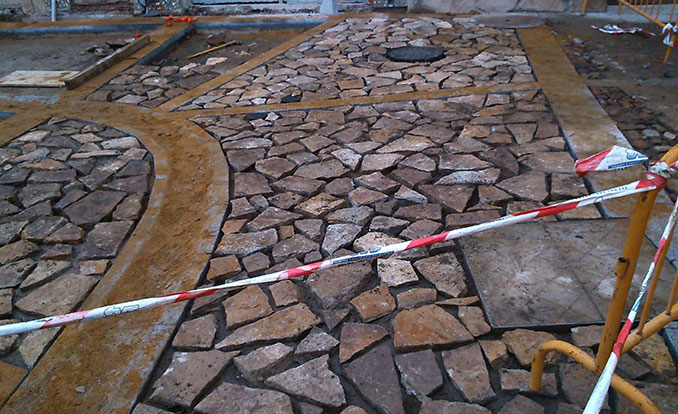
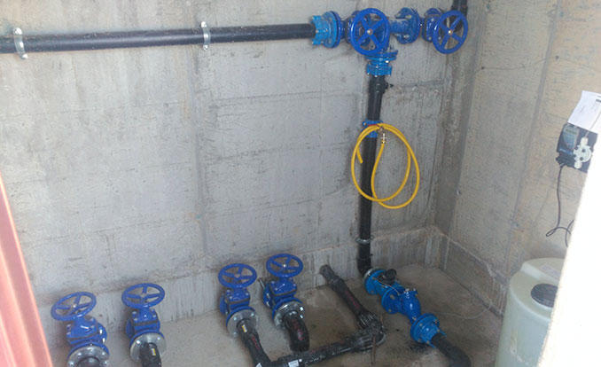
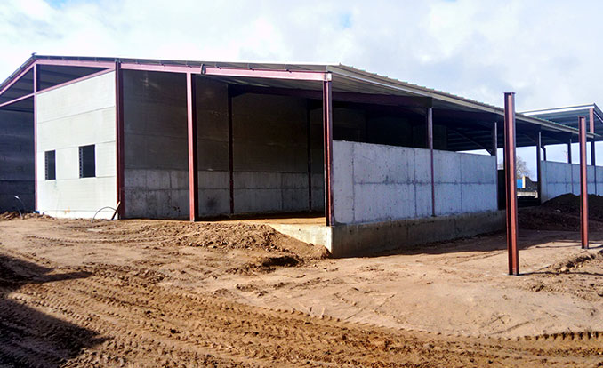
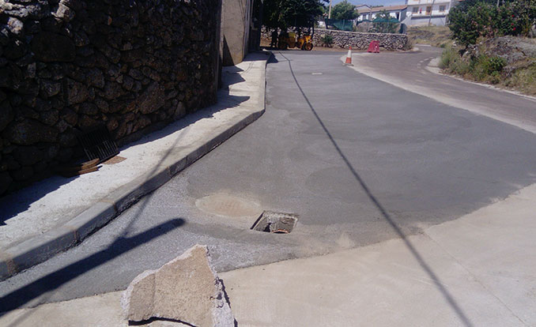

Elaboración y reposición de calles en cualquier acabado:
Hormigón fratasado.
Hormigón impreso.
Hormigón pulido.
Piedra.
Adoquinado.
Aglomerado.
Saneamientos.
Hormigón fratasado.
Hormigón impreso.
Hormigón pulido.
Piedra.
Adoquinado.
Aglomerado.
Pabellones.
Pistas polideportivas.
Pistas de padel.
Frontones
Parques.
Piscinas.
Cerramientos de mamposteria.
Carreteras de nueva construccion y reformas.
Obras de fabricas como puentes, entradas, entubaciones, bajantes.
Concentraciones parcelarias.
Renovación de caminos.
